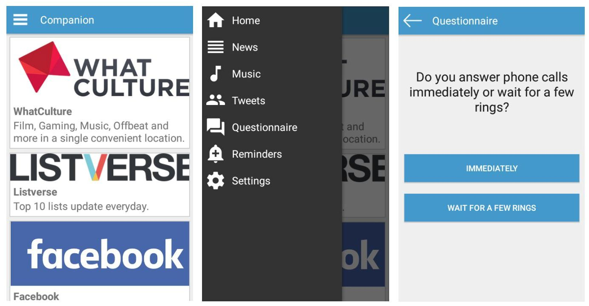

Your browser doesn't support the features required by impress.js, so you are presented with a simplified version of this presentation.
For the best experience please use the latest Chrome, Safari or Firefox browser.
A Presentation on Personal Companion
Supervisors
- Ishwar Dhungana
- Rajiv Shrestha
- Surakshya Neupane
Team Members
- Nishan Bajracharya | BCT-069-20
- Nootan Ghimire | BCT-069-21
- Suraj Gyawali | BCT-069-45
- Umesh Acharya | BCT-069-47
Presented On : 10th September 2015
https://hcoebct069.github.io/personal-companion/
Overview
- Introduction
3
- Progress Report
6
- Work Done
7
- Work Remaining
8
- Frontend
9
- Android Development
10
- Workflow
11
- Backend
12
- Probability Model
13
- Tag Management
15
- Conclusion
16
Introduction
Personal Companion is an app that uses questionnaire based personality modelling to recommend feeds to the user.
The app will recommend news articles, tweets and music based on the user's personality traits.
Under the Hood
- Bayesian Network and Inference
- Tag Based Modelling
- Client-Server Architecture
Bayesian Network and Inference
- What is it and Why we chose it?
- Inference Mechanism in Bayes Net
- Our Network
- Simplifications Made
Bayesian Network
- Directed Acyclic Graph
- Also a Model
- Can be used to Model Almost Anything
Inference in Bayes Net
- Major Part that has application in AI
- Uses Conditional Probability Theorem
- Independence Relations to Simplify Operations
Work Remaining
- Connecting tag management to feed generation
- Mapping questionnaire model to tag management
- UI refinement and testing
Android Development
- Built in Android Studio
- Targeted for Android 5 Lollipop
- Miminum SDK : 4.0.3 ICS (API 15)
Workflow
- Feed Display
- Questionnaire Layout

Probability Model
- Simple implementation of Bayesian Network
- Personality factors (age, gender, etc) based cause and effect model
- Prior and Posterior Probability Calculation
- Conditional Probability Table Lookup
Tag Management
- Tags assignment for different personality factors
- Tag assignment helper interface